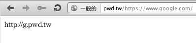

pwd.tw - shorten current/working url in T9 keyboard friendly format
pwd.tw/<your current url>
Just add pwd.tw/ before your current url to shorten it.
The shorten will display in context directly.

The shorten use only lowercase, no same-sibling chars within ".adgjmptw".
You can also drag this Click-to-Short link to your bookmark toolbar.
Use pwd.tw/# instead of pwd.tw/ before your current url to shorten it if you see the "Connection Reset by Peer" error in China.
Written by TingSong.
Copyright (C) November 2011-2015 TingSong Syu